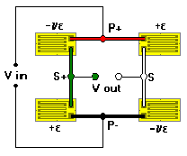

2+2v (Axial/Bending) Bridge
2+2v (Axial/Bending) Bridge2+2v (Axial/Bending) Bridge
Associated Application
General Considerations
This is the most common bridge arrangement for axial (column) load cells. Bridge output, based on a uniaxial stress field, varies nonlinearly with strain.
Two dual-element 90-degree gages are typically used to complete the full-bridge circuit. Gages are installed on opposite sides of the column to reduce sensitivity to bending strains.

This configuration can also be used on bending beam transducers. The output is lower, however, than for a full-bridge with fully active arms. Output varies nonlinearity with strain.
Inputs (Limits)
 Strain (-5000 to +5000 microstrain)
Strain (-5000 to +5000 microstrain)
Gage Factor (1.0 to 5.0)
Poisson�s Ratio (0.1 to 0.4)
Calculations
 Output (mV/V)
Output (mV/V)